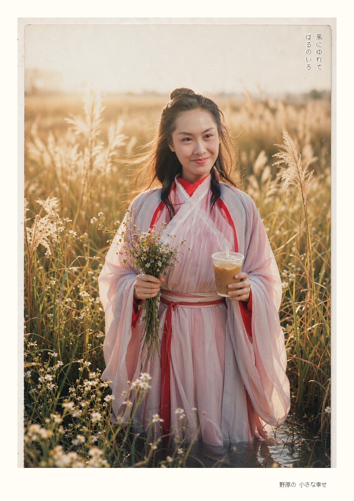
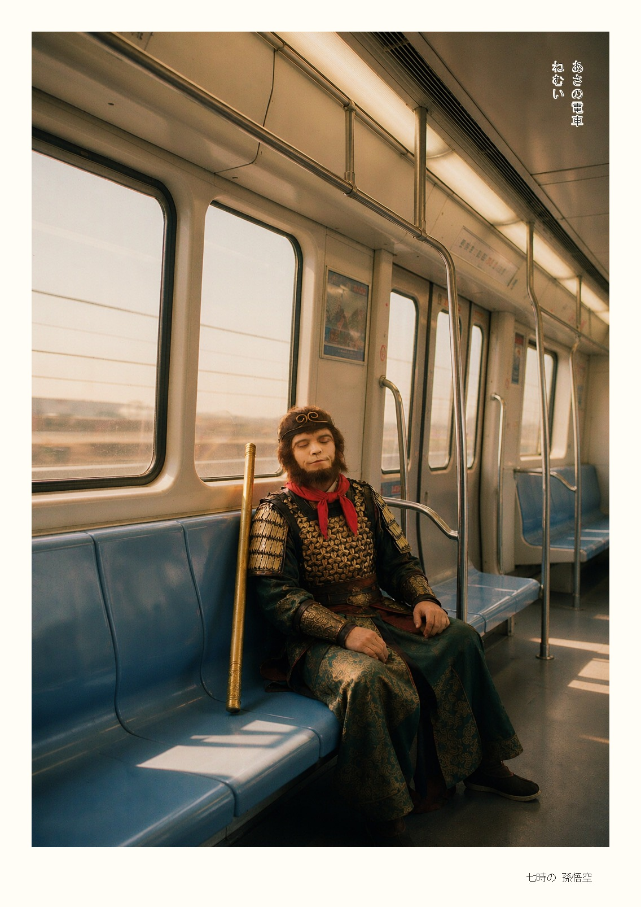
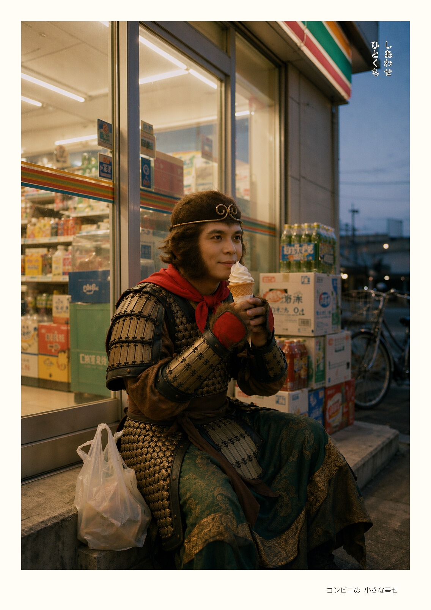
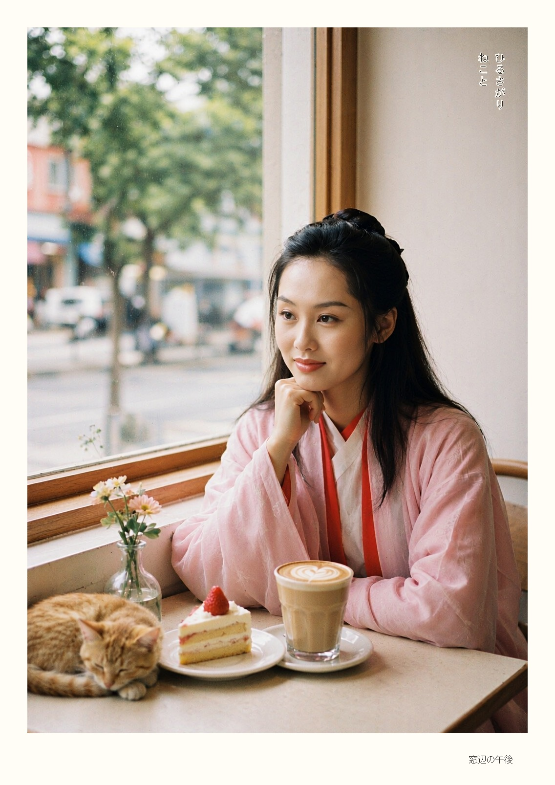
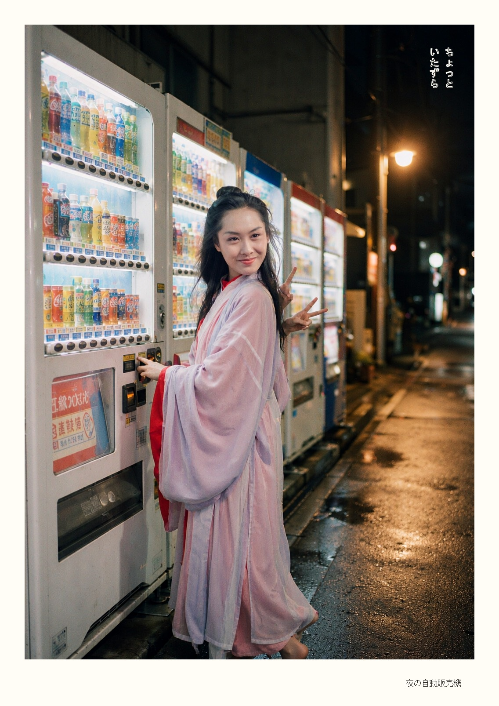
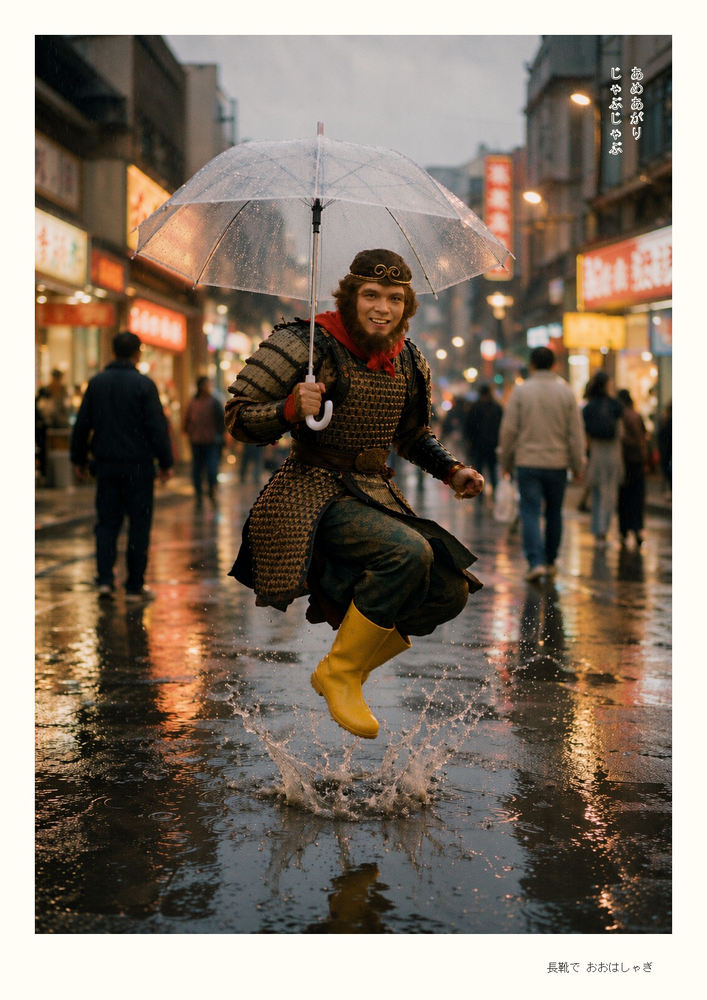
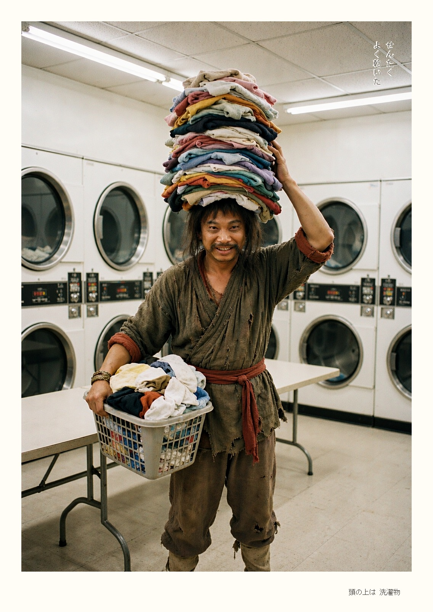
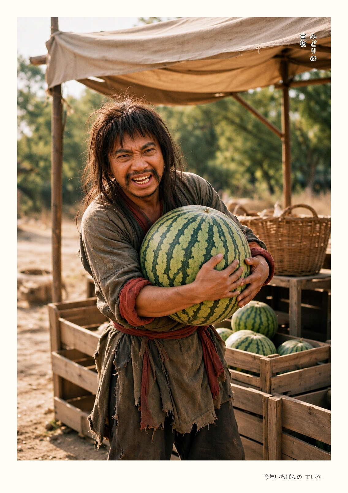
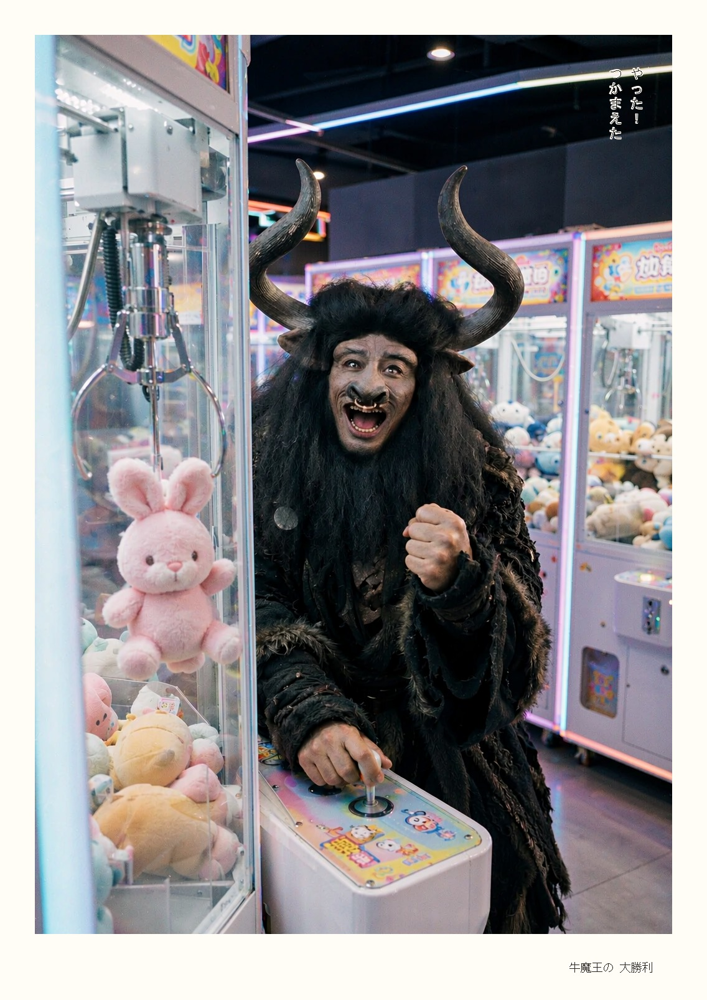

把神话 / 古装角色放进真实的现代日常生活，用日系小清新胶片质感拍出来。 威严的角色认真做着最平凡的小事——反差自然产生活泼与萌感，全程治愈系。
一组系列图建议 3 档以上轮换，统一胶片质感，成组看才不出戏。
9 张原创样图（AI 辅助生成，版权归 PY / PyQuant 所有）。









从锚点图到带相纸边框的成品，全流程可复现。
脸占画面 ≥1/4 的近景照，裁脸 → 方形化 → 放大到 1024×1024。
角色 + 现代日常行为 + 真实场景，一张图只讲一个梗。
同一 prompt 出 2–3 张挑最好的，胶片感自带随机性。
image1=正确脸，image2=待修成图，保住场景只改脸。
脸部裁出放大拼板复查：脸型 / 眉眼 / 开合 / 接缝 / 调色。
用 photo_frame.py 叠白相纸边框、竖排注记、底部标题。
纯 Pillow 实现，无其他依赖（Python ≥ 3.9）。文字永远后期叠，AI 写字必乱码。
python scripts/photo_frame.py input.png output.png \
--ratio 0.055 --crop-bottom 0.06 --bottom-extra 0.9 \
--title-in-margin --halo 0.5 \
--caption "風にゆれて" --caption2 "はるのいろ" --title "野原の 小さな幸せ"